Three Basic Distributions
One, Two, Three
When looking at the probability distributions of dice mechanics, you'll find that they fall into one of three generic categories. They're commonly called flat, pyramid, and bell, which corresponds to the shapes of their graphs. Let's take a look at each of them.
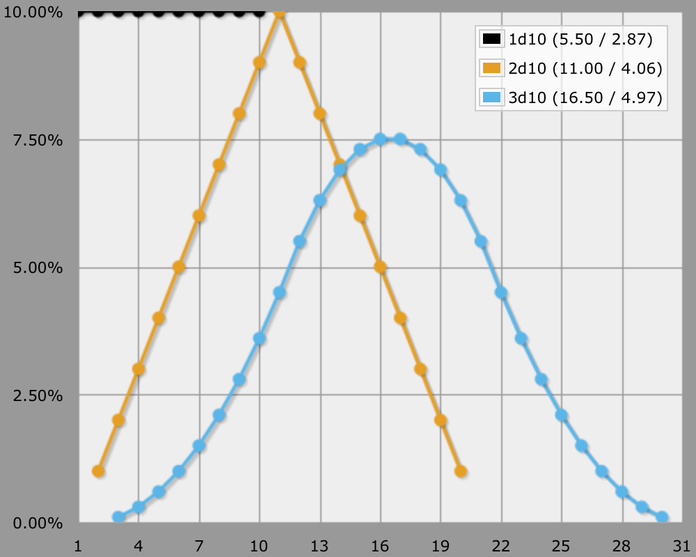
Zero
Ok, there are actually four types. When you roll zero dice, the result is always the same. The graph is a single point. It is useful to be aware of this option, because a randomizer is not always needed. If you don't use dice, cards, or any other randomizer, it means your resolution mechanic isn't based on Fortune. This is not as strange as it may sound. The alternatives are Drama and Karma. It is worthwhile to research them, but I won't discuss them any further.
One
The simplest die mechanic consists of rolling one die. All numbers are equally likely to be rolled, whether it's a d6, a d10, or a d20. The probability distribution is a flat line. The at-least distribution is a slanted line.
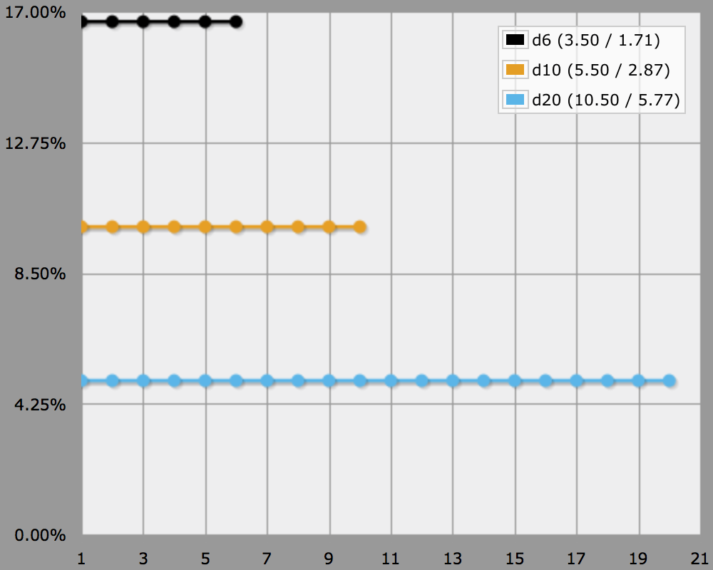
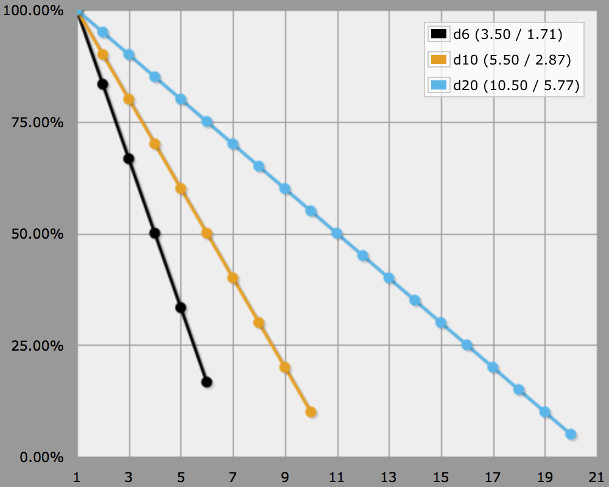
Single die rolls are compared to one or more thresholds to determine the level of success. The simplest case is a single target number that sets a success-failure boundary, the most complex case has a specific result for each possible outcome.
Increasing the die size does three notable things. First, it allows more possible outcomes, so you can have more variety or more detail. Second, the likelihood of getting a specific value drops, making it feel more random. Third, adding a flat modifier on top of a die becomes less significant. For example, a d10 has ten distinct outcomes, leading to at most ten different results. The likelihood of getting a specific value is 10%. If you add +1 to a roll, you shift the result upwards by 10%. In contrast, a d20 has twenty possible outcomes, each having a chance of 5% to occur. Adding +1 to a roll shifts the result upwards by 5%.
Two
If you add a second die, the probability distribution will be pushed upwards in the middle, resulting in what is commonly called a pyramid shape. This is because the average value can be rolled in more ways than the extreme values. This progression is linear because the probability difference between adjancent numbers is always the same, except where it flips in the middle. As as result, the at-least view produces a curved slope. 2d10 is a nice example.
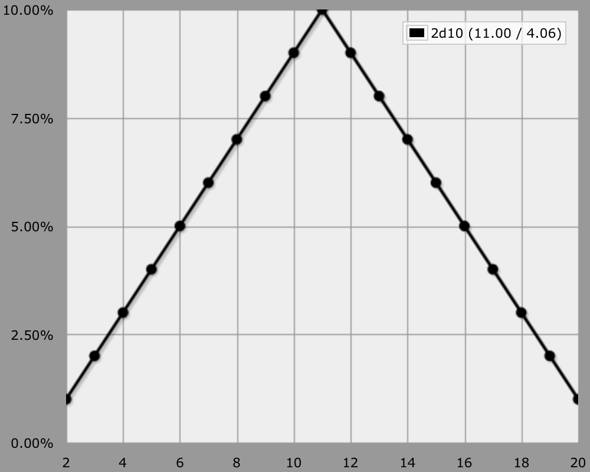
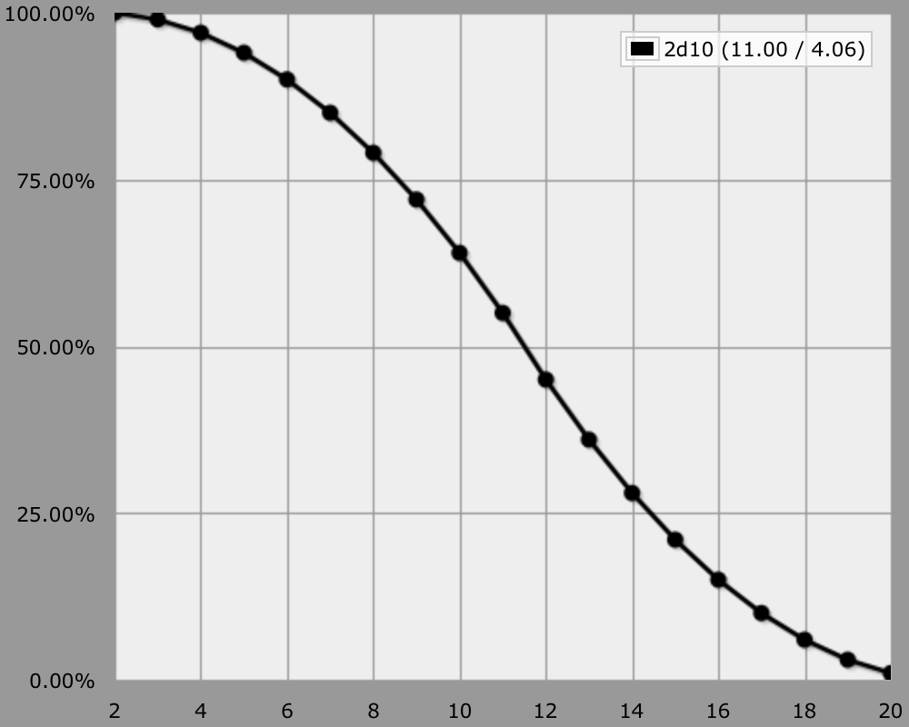
You use two dice if you want a bias towards an average result, but still want extreme values to occur regularly. Basically, it makes the system feel less random than a one-die system. As with a single die, increasing the die size makes each specific value less likely to occur. Note that two opposed-sign die rolls function as one double-dice roll. 1d10-1d10 has the same graph shape as 2d10 and -2d10, the only difference is the range of the rolled values.
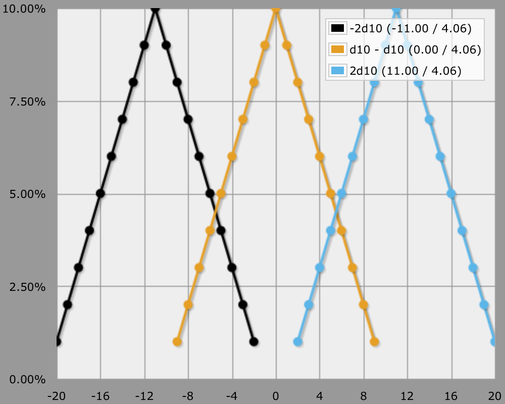
You can also combine two different dice. In that case the larger die dominates, flattening the middle of the graph. If the size difference is large, it practially functions like a one-die system. This sequence illustrates it well: 1d10 - 1d10+1d2 - 1d10+1d4 - 1d10+1d6 - 1d10+1d8 - 2d10.
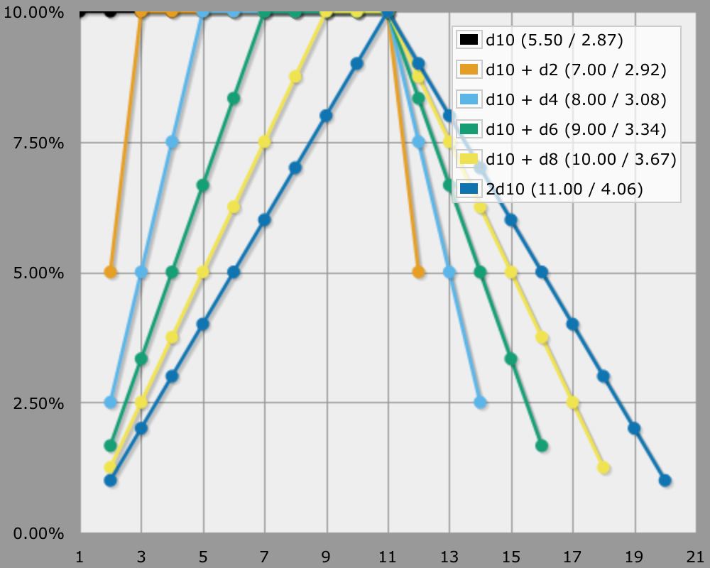
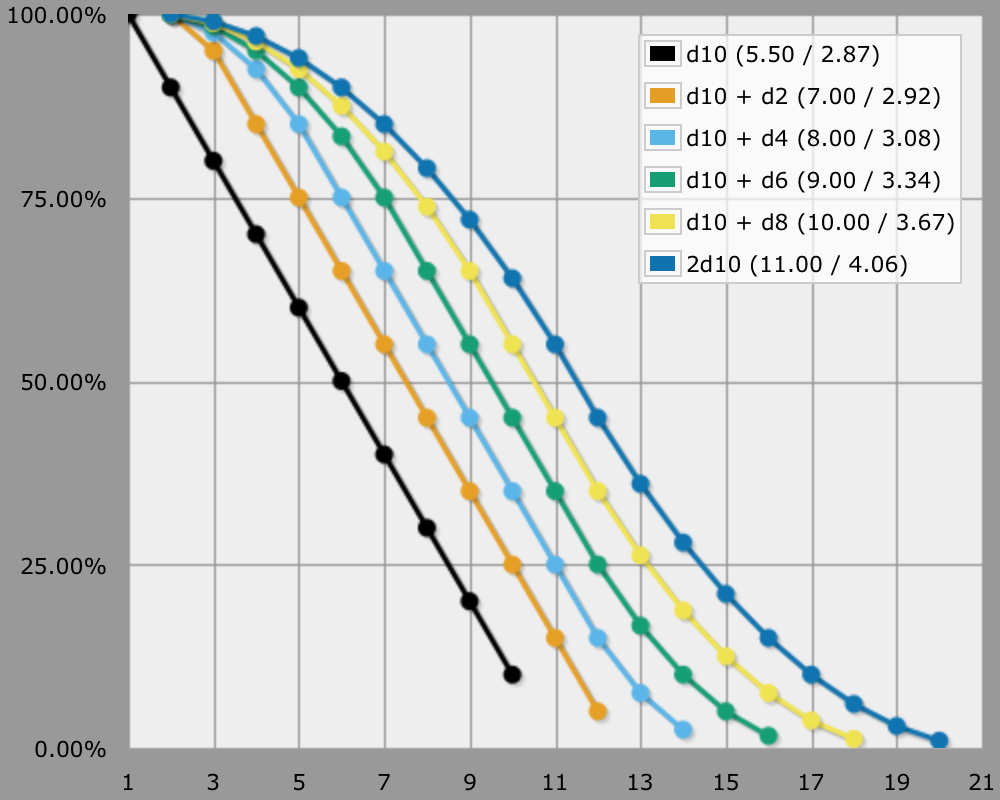
Three
The difference between two and three dice is similar to the difference between one and two dice. Because we're adding a new linear progression on top of an already existing linear progression, the result is a gradual curve. Because the curve is symmetrical, it has the shape of a bell. The at-least view remains a curve, which is rounder than the one for two dice.
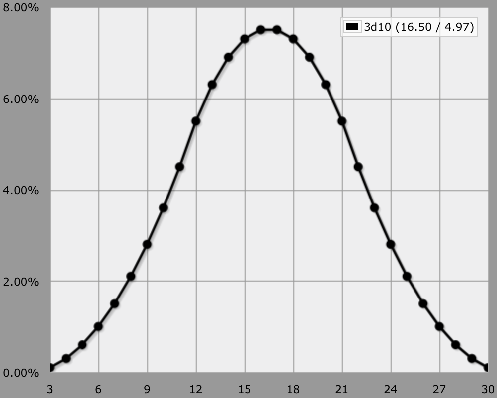
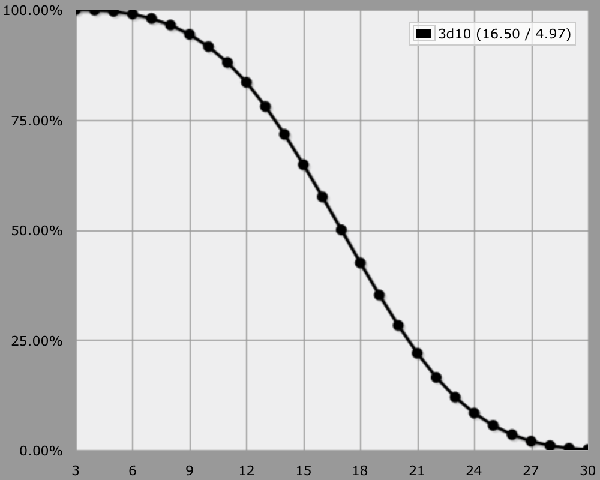
Compare 2d10 with 3d10. In the case of 2d10, the chance difference between adjacent numbers is always 1.00%, first increasing and then decreasing. In the case of 3d10, the difference between the chance differences first increases with 0.10%, then decreases with 0.20%, and then reverses. The differences are 0.20%, 0.30%, 0.40%, …, 1.00%, 0.80%, 0.60%, …, 0.00%, then reversed.
Using three dice means that extreme values will show up rarely, while values near the average will show up often. Moreover, numbers near the edges and center of the graph have about the same chance to show up as their neighbor. Everything else I've said about two dice applies to three dice as well. Whether you add or subtract dice doesn't matter for the shape of the graph. Also check out the progression 2d10 - 2d10+1d2 - 2d10+1d4 - 2d10+1d6 - 2d10+1d8 - 3d10.
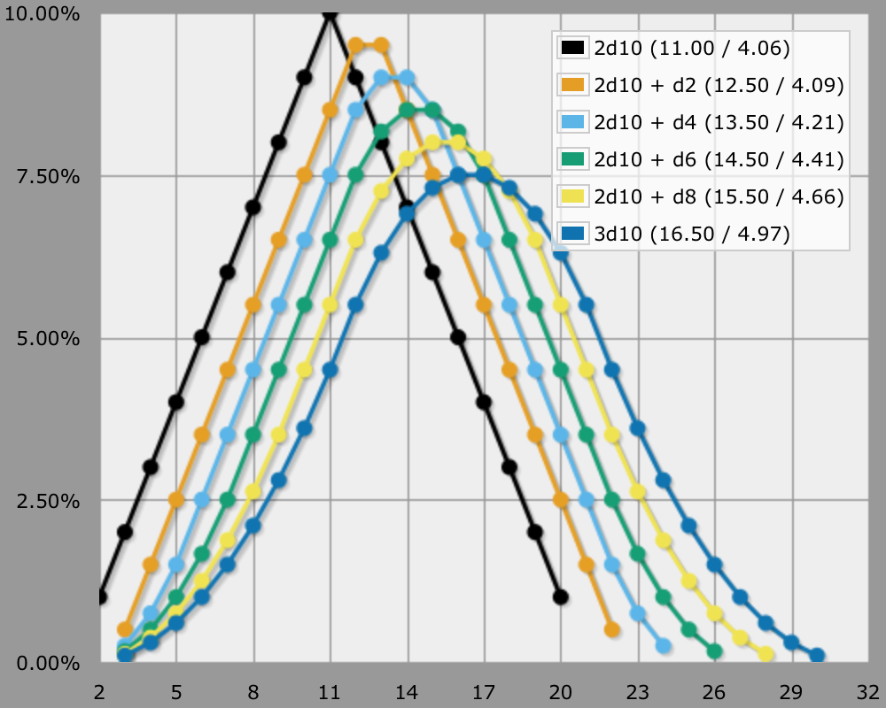
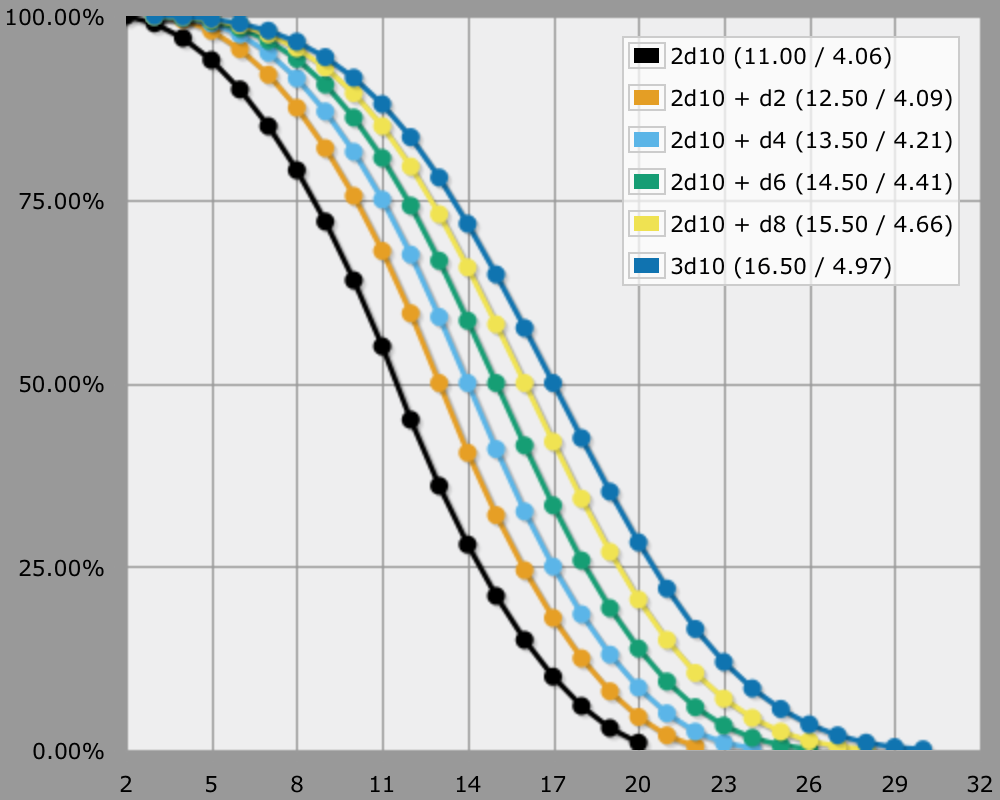
More
Adding more than three dice doesn't result in a new graph shape, you're stuck with the bell. What does change is the exact slope of the curve, as the difference between the extreme and the average values becomes greater.